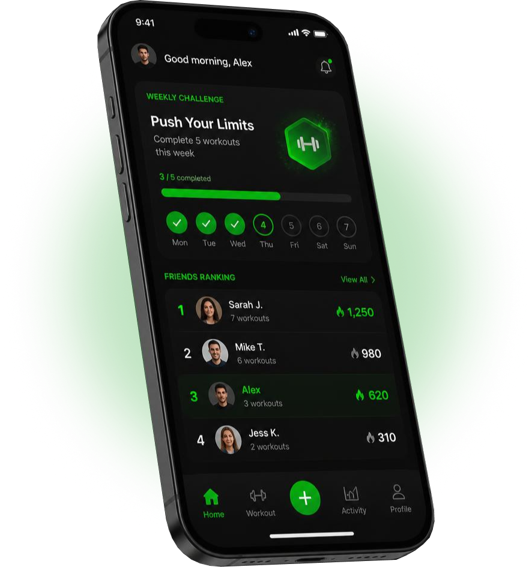

Conexões inteligentes
Encontre parceiros com base na sua localização, rotina, nível de experiência e modalidades preferidas.
Conecte-se com pessoas que compartilham suas modalidades, objetivos e horários. Encontre parceiros ideais, descubra novos esportes e movimente-se em comunidade.
Muito além de um parceiro de treino: uma comunidade que se movimenta junto.

Manter a constância nos treinos é um desafio quando falta motivação, os horários não batem ou não há por perto quem goste do mesmo esporte. O JuntaFit nasceu para aproximar pessoas com os mesmos objetivos e transformar a sua rotina de atividades físicas.
O JuntaFit aproxima você de pessoas com a mesma paixão por se movimentar. Com perfis personalizados e filtros por localização, disponibilidade e nível de treino, fica fácil encontrar a dupla perfeita, montar um grupo ou se engajar em uma nova comunidade.
Ferramentas criadas para engajar usuários e fortalecer comunidades esportivas.
Encontre parceiros com base na sua localização, rotina, nível de experiência e modalidades preferidas.
Crie ou entre em grupos locais, organize treinos coletivos e amplie sua rede de contatos.
Participe de desafios individuais ou em grupo, supere metas e acompanhe suas conquistas.
Interaja com tranquilidade em uma plataforma com perfis verificados, avaliações, bloqueio de usuários e proteção de dados de localização.
Somos a equipe por trás do JuntaFit: uma iniciativa que une tecnologia, inovação e bem-estar para construir uma comunidade esportiva mais integrada, segura e colaborativa.
Produto e Gestão
Desenvolvimento
Negócios, Parcerias e Segurança
UX/UI, Desenvolvimento e Infraestrutura
Quer testar o JuntaFit em primeira mão? Cadastre seu e-mail para acompanhar o desenvolvimento e receber novidades exclusivas antes do lançamento.